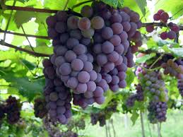

|
|
DESCRIÇÃO DO UVA
A uva é o fruto da videira (Vitis sp.), uma planta da família das Vitaceae.
É utilizada frequentemente para produzir sumo, doce (geleia), vinho e passas, podendo também ser consumida crua.
Entre as espécies de videiras podemos referir:
Vitis vinifera, o tipo de videira mais frequente na produção do vinho, na Europa;
Vitis labrusca, espécie norte-americana, utilizada na produção de sumo, uva de mesa e, algumas vezes, vinho;
Vitis riparia, tipo de videira bravio norte-americano, usado, às vezes, para produzir vinho;
Vitis rotundifolia, uva muscadínea, usada para doces e, por vezes, vinho;
Vitis aestivalis, em que a variedade Norton é usada para fabricar vinho.

HOME
|